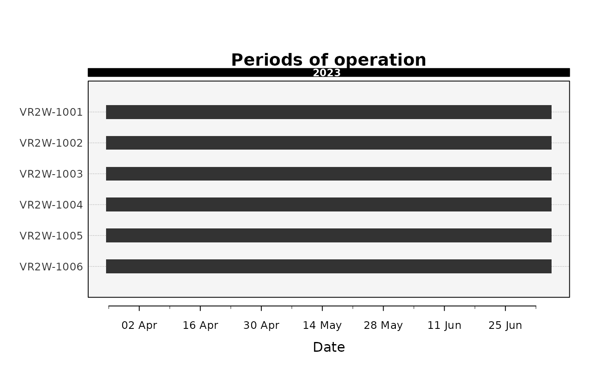

Plot receiver operating periods (deployment timeline)
Source:R/plotDeployments.R
plotDeployments.RdDraws a timeline of when each receiver (or station/site) was deployed and actively
listening over the study period - one row per unit, with a bar spanning each [deploy, recover]
interval and broken bars where a real coverage gap occurs. It is the visual companion to
checkDeployments (which reports metadata problems) and shares the visual language of
plotAbacus (calendar axis, labelled year band, group colouring). Because a gap in a
detection record can mean either "animal absent" or "receiver not listening", this figure supplies
the sampling-effort context needed to read the detection plots correctly.
Usage
plotDeployments(
deployments,
events = NULL,
deployment.deploy.col = "deploy",
deployment.recover.col = "recover",
group.by = NULL,
row.by = "receiver",
end = NULL,
merge.gaps = 1,
sort.by = c("group", "start", "name"),
color.pal = NULL,
single.color = "grey20",
bar.height = 0.45,
dividers = TRUE,
top.band = "%Y",
date.interval = "auto",
date.start = 1,
date.format = NULL,
background.color = "grey96",
events.pch = 8,
events.color = "grey15",
events.cex = 1,
events.label = "event",
legend = NULL,
main = "Periods of operation",
cex = 1,
file = NULL,
width = NULL,
height = NULL,
res = 300
)Arguments
- deployments
A receiver-deployment / station log (e.g. from
importDeployments), with at least therow.byanddeployment.deploy.colcolumns (and usuallydeployment.recover.col).- events
Optional data frame of point events to overlay, with a column named as
row.by(the row key) and a date-time column (time, or the first POSIXct column). Study-neutral: taggings, servicing, downloads, etc.- deployment.deploy.col, deployment.recover.col
Names of the deployment and recovery date-time columns in the receiver-deployment log (
deployments). Default to the canonical"deploy"/"recover"produced byimportDeployments; set them when a hand-made log uses other names (e.g.deployment.deploy.col = "deploy_date"). Thedeployment.prefix marks these as deployment-log columns, keeping them distinct from the bare*.colarguments, which always refer to the detection dataset.- group.by
Optional column giving a coarser grouping used to colour the rows and their labels (e.g.
"array","region"). If NULL, all rows sharesingle.color.- row.by
Name of the column defining the rows (the operating unit). Defaults to
"receiver"; set to"station"(or any column) to aggregate operating periods to a coarser unit.- end
Optional study-end date-time used to close still-active deployments. If NULL, the latest date in the log is used.
- merge.gaps
Numeric. Consecutive deployments of a unit separated by
<=this many days are drawn as a single bar; longer gaps appear as breaks. Defaults to 1.- sort.by
Row ordering:
"group"(bygroup.by, then first deployment; default),"start"(first deployment) or"name"(alphabetical).- color.pal
Colours for the groups. If NULL, a colourblind-safe Okabe-Ito palette.
- single.color
Colour used when
group.byis NULL. Defaults to "grey20".- bar.height
Bar thickness as a fraction of the row spacing. Defaults to 0.45.
- dividers
Logical; draw a subtle separator line between groups (only when
group.byis set andsort.by = "group", so groups are contiguous). Defaults to TRUE.- top.band
A
strftimeformat for the labelled band above the panel (e.g. "%Y" for years). FALSE to omit. Defaults to "%Y".- date.interval
Controls the x-axis date labels.
"auto"(default) chooses calendar-aware breaks automatically. A positive integer switches to manual mode - a label every n-thdate.formatunit (e.g.date.format = "%b",date.interval = 3labels every third month) - useful for very long or very short spans.- date.start
Integer phase/offset for the first manual label (used with a numeric
date.interval). Defaults to 1.- date.format
Optional
strftimeformat for the x-axis labels. If NULL, calendar-aware labels are chosen automatically (and "%b" in manual mode).- background.color
Panel background colour. Defaults to "grey96".
- events.pch, events.color, events.cex, events.label
Marker symbol, colour, size and legend label for the
eventsoverlay. Defaultspch = 8, "grey15", 1, "event".- legend
Logical; draw a group/event legend in the right margin. If NULL (default), on when
group.byis set oreventsare supplied.- main
Plot title. Defaults to "Periods of operation".
- cex
Global expansion factor for all text. Defaults to 1.
- file
Optional output file. If
NULL(the default), the figure is drawn on the current graphics device - the usual interactive behaviour. If a file path is supplied, moby opens a graphics device chosen from the file extension (.pdf,.svg,.png,.jpg/.jpeg,.tif/.tiffor.bmp), draws the figure to it, and closes the device automatically (also if an error occurs). For multi-page or batch workflows, keepfile = NULLand manage the device yourself (e.g.pdf(...); plot...(); dev.off()).- width, height
Output size in inches. Used only when
fileis supplied. IfNULL(default), a size is derived from the figure's structure (e.g. the number of individuals or panels). These defaults are sensible starting points, not guarantees: dense or unusual figures may still need you to setwidth/heightexplicitly. The two can be set independently.- res
Resolution in pixels per inch, for raster formats only (
.png,.jpg,.tif,.bmp); ignored for vector formats (.pdf,.svg). Used only whenfileis supplied. Defaults to 300.
Value
Invisibly, a tidy per-row coverage table: row, group, n_deployments, first, last,
active_days, gap_days and coverage (active fraction of the first-to-last span).
Details
Rows are the unique values of row.by (a receiver, or a coarser unit such as a station or
site); a unit's deployments are merged into operating-period bars, with consecutive deployments
whose gap is <= merge.gaps days fused into one bar and longer gaps left as breaks. Rows can be
coloured and legended by a coarser grouping (group.by, e.g. array or region). An optional events
overlay draws neutral markers at points in time on the relevant rows (e.g. taggings, servicing
visits, downloads). The layout is device-stable (inch-anchored band, labels and legend), matching
the rest of the plotting family.
Examples
# receiver operating-period timeline from the deployment log
plotDeployments(rays_deployments)
#>
#> Deployment timeline
#> ------------------------------------------------------
#> Rows: 6 (by receiver)
#> Deployments: 6
#> Span: 2023-03-25 to 2023-07-05
#> Receiver-days: 613
#> ------------------------------------------------------
